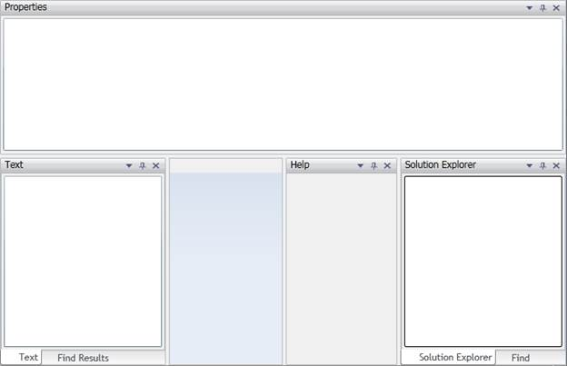

DockingManager Framework supports tabbed docking. A window can be tabbed inside other window. This can be achieved through XAML, C# or using Mouse.
SideInDockedMode property describes the docking position of the element in a DockingManager. If this is set to Tabbed, the window will be tabbed.
TargetNameInDockedMode property must be set to specify where the window must be tabbed.
Following is a sample code demonstrating tabbed docking:
|
[XAML]
<UserControl x:Class="Sample.MainPage" xmlns="http://schemas.microsoft.com/winfx/2006/xaml/presentation" xmlns:x="http://schemas.microsoft.com/winfx/2006/xaml" xmlns:d="http://schemas.microsoft.com/expression/blend/2008" xmlns:mc="http://schemas.openxmlformats.org/markup-compatibility/2006" xmlns:syncfusion="clr-namespace:Syncfusion.Windows.Tools.Controls;assembly=Syncfusion.DockingManager.Silverlight" xmlns:system="clr-namespace:System.Windows.Controls;assembly=System.Windows.Controls" mc:Ignorable="d" d:DesignWidth="640" d:DesignHeight="480"> <Grid x:Name="LayoutRoot"> <syncfusion:DockingManager Name="dockingManager"> <system:TreeView syncfusion:DockingManager.Header="Solution Explorer" syncfusion:DockingManager.SideInDockedMode="Right" syncfusion:DockingManager.DockState="Dock" syncfusion:DockingManager.WindowName="solutionexplorer" syncfusion:DockingManager.DesiredWidthInDockedMode="150"> </system:TreeView> <TextBox syncfusion:DockingManager.Header="Text" syncfusion:DockingManager.SideInDockedMode="Left" syncfusion:DockingManager.DockState="Dock" syncfusion:DockingManager.DesiredWidthInDockedMode="150" syncfusion:DockingManager.WindowName="text"/> <!-- Find Results is tabbed with Text window--> <ContentControl syncfusion:DockingManager.DockState="Dock" syncfusion:DockingManager.Header="Find Results" syncfusion:DockingManager.SideInDockedMode="Tabbed" syncfusion:DockingManager.WindowName="findresults" syncfusion:DockingManager.TargetNameInDockedMode="text" syncfusion:DockingManager.DesiredHeightInDockedMode="200"/> <ListBox syncfusion:DockingManager.DockState="Dock" syncfusion:DockingManager.Header="Properties" syncfusion:DockingManager.SideInDockedMode="Top" syncfusion:DockingManager.DesiredHeightInDockedMode="200"/> <!-- Docking Help window left side of solution explorer window--> <ContentControl syncfusion:DockingManager.DockState="Dock" syncfusion:DockingManager.Header="Help" syncfusion:DockingManager.SideInDockedMode="Left" syncfusion:DockingManager.WindowName="help" syncfusion:DockingManager.TargetNameInDockedMode="solutionexplorer" syncfusion:DockingManager.DesiredWidthInDockedMode="150"/> <!-- Find window Top is tabbed with solution explorer window--> <ContentControl syncfusion:DockingManager.DockState="Dock" syncfusion:DockingManager.Header="Find" syncfusion:DockingManager.SideInDockedMode="Tabbed" syncfusion:DockingManager.WindowName="find" syncfusion:DockingManager.TargetNameInDockedMode="solutionexplorer" syncfusion:DockingManager.DesiredWidthInDockedMode="150"/> </syncfusion:DockingManager> </Grid> </UserControl>
|

Figure 83: Tabbed Docking